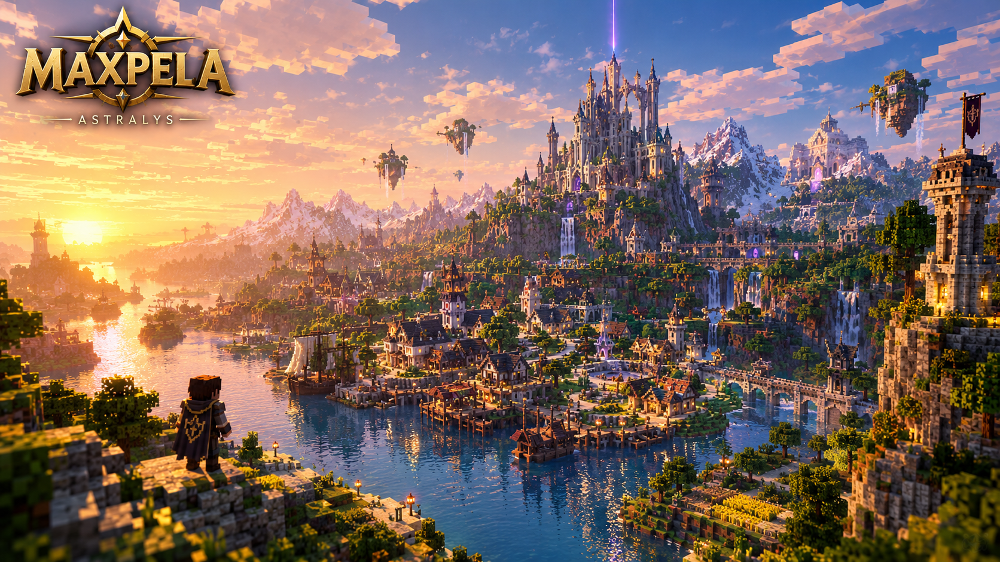
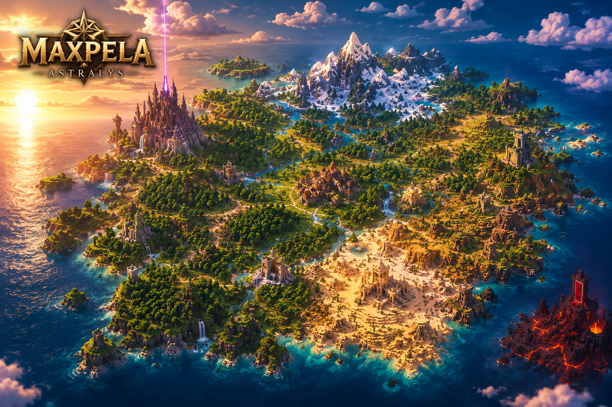
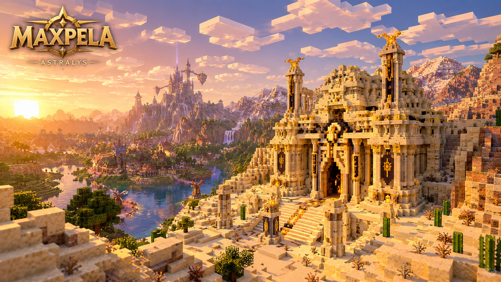

Monde ouvert
Des régions, villages, ruines, chemins et lieux oubliés à découvrir. Certains secrets ne seront accessibles qu'après avoir obtenu certains objets.
MINECRAFT JAVA EDITION · 1.21.8
Bienvenue à Astralys. Explorez un monde ouvert, découvrez d'anciens donjons et rassemblez les fragments capables de rouvrir un mystérieux portail vers le Nether.
L'AVENTURE
Un monde construit pour être exploré, découvert et raconté.
Des régions, villages, ruines, chemins et lieux oubliés à découvrir. Certains secrets ne seront accessibles qu'après avoir obtenu certains objets.
Chaque donjon possède son identité, ses énigmes, ses combats, ses récompenses et sa Pierre d'Obsidienne.
Une histoire mystérieuse vous mènera progressivement vers un portail que personne ne devrait peut-être rouvrir.
Les récompenses obtenues dans les donjons permettent progressivement d'explorer de nouvelles parties du monde.
LE LORE
Une ancienne légende raconte que plusieurs héros du passé ont enfermé une menace extrêmement dangereuse dans un autre monde.
Pour empêcher toute réouverture du portail, les fragments nécessaires furent séparés et cachés.
Des donjons furent construits ou protégés par des gardiens liés aux héros du passé.
Aujourd'hui, presque personne ne croit encore à cette histoire.
Mais certaines traces semblent indiquer que le passé n'est pas aussi mort qu'on le pensait.
ARCHIVES D'ASTRALYS
4 Pierres d'ObsidienneCOMMENCER L'AVENTURE
Retrouvez ici tous les fichiers officiels nécessaires pour jouer.
Minecraft Java Edition 1.21.8
TÉLÉCHARGEMENT BIENTÔT La première version officielle sera publiée ici.Retrouvez ici les mods nécessaires au fonctionnement de MaxPela, avec leurs versions exactes.
BIENTÔT DISPONIBLEUne configuration graphique recommandée sera proposée pour renforcer l'ambiance d'Astralys.
BIENTÔT DISPONIBLETéléchargez les fichiers officiels.
Installez Minecraft Java Edition 1.21.8.
Placez la carte dans votre dossier
saves.
Lancez le jeu et commencez votre aventure à Astralys.
ACTUALITÉS
Le point de départ de l'aventure prend forme. Astralys sera le premier lieu auquel le joueur devra s'attacher.
Lire le devlog →Lore, chronologie, monde, donjons et systèmes : découvrez les grandes étapes du Chapitre I.
Voir la roadmap →Une première image mystérieuse sera bientôt révélée.
Voir les médias →EXPLORATION
Quatre lieux. Quatre épreuves. Quatre Pierres d'Obsidienne.
Un ancien édifice de pierre cachant un accès vers les profondeurs.
Récompense : 🏹 ArcFlèches, cibles, boutons et mécanismes à distance.
Informations à venirUne nouvelle capacité permettra d'accéder à des zones auparavant fermées.
Informations à venirLe dernier donjon du premier chapitre préparera la conclusion de l'aventure.
Informations à venirDécouvrez l'univers de MaxPela.
Une ancienne légende. Quatre donjons. Quatre Pierres d'Obsidienne. Et une porte qui ne devait jamais être ouverte.



REJOINDRE L'AVENTURE
Suivez le développement, partagez vos théories, testez les premières versions et découvrez les secrets de MaxPela avec la communauté.
💬 Rejoindre le Discord